Oggi ho deciso di ripassare (queste note le scrivo essenzialmente per me...) la classificazione dei coloranti organici secondo la costituzione chimica, cioè in funzione dei gruppi cromofori presenti nella sua molecola o in funzione della struttura.
Un elenco potrebbe essere questo:
-COLORANTI AZOICI: sono i più importanti e sono caratterizzati da avere nella molecola uno o più gruppi -azo -N=N- . Vengono preparati per "diazocopulazione" di una ammina aromatica primaria (capostipite è la famosa anilina); inizialmente l'ammina viene diazotata con acido nitroso e poi il sale di diazonio prodotto viene unito con un altro composto aromatico contenente gruppi attivati. Gli esempi sono innumerevoli e le sottoclassi degli azoici anche, ma riferendoci per semplicità sempre alla nostra crisoina, l'ammina è rappresentata dall'acido solfanilico ed il composto aromatico copulato è la resorcina, con due ossidrili in posizione meta.

-COLORANTI ETILENICI: contengono il cromoforo etilenico -CH=CH- più volte ripetuto. Importanti in questo gruppo sono i carotenoidi del mondo vegetale: ecco le formule del β-carotene (in alto, giallo) delle carote e del licopene (in basso, rosso) dei pomodori, con la loro bellissima e chilometrica serie di doppi legami coniugati.
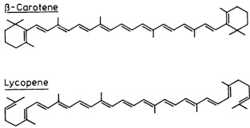
-COLORANTI NITROSO E NITRO: si ottengono nitrosando o nitrando fenoli o naftoli e quindi contengono i gruppi -NO ed -NO2, associati al gruppo ossidrile. Formano facilmente dei complessi di coordinazione con alcuni metalli, generando lacche insolubili che si fissano al substrato. Un esempio è l'α-nitroso-β-naftolo che si colora in rosso legandosi col cobalto, con una sensibile reazione sfruttata in chimica analitica.
Il più antico nitrocolorante è invece il famoso acido picrico (trinitrofenolo) conosciuto fin dalla fine del '700 per le sue potenti proprietà di colorare in giallo (non solo quelle...).
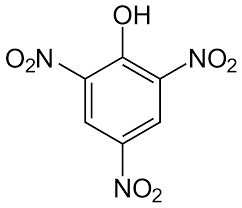
-COLORANTI DEL FIFENILMETANO: hanno il cromoforo chetoimminico C6H5-C(=NH)-C6H5, dove negli anelli aromatici appaiono anche gruppi attivanti in posizione para. Un esempio nei colori classici è il giallo auramina.
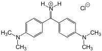
- COLORANTI DEL TRIFENILMETANO: si basano sui gruppi del fucsone (a sinistra) o della fucsoimmina (a destra), dove ai legami liberi del carbonio in alto vengono attaccati altri due anelli aromatici sostituiti in para con gruppi attivanti amminici (più o meno sostituiti) od ossidrili. Esempi noti sono il cristalvioletto ed il verde malachite, metilati nei due gruppi amminici.
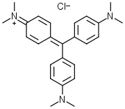
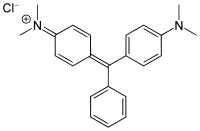
-COLORANTI INDIGOIDI: sono caratterizzati dal cromoforo in figura, dove X è un gruppo aromatico più o meno complesso. Naturalmente il colorante più importante di questa classe è l'indaco (naturale o artificiale). Il suo dibromoderivato (due atomi di bromo negli anelli benzenici) costituisce la famosa porpora di Tiro degli antichi.
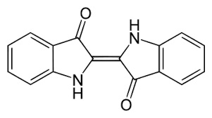
-COLORANTI XANTENICI: è una classe numerosa in cui è presente la molecola base xantene, poi variamente sostituita e resa più complessa.
Fluoresceina, eosina, rodamina, ecc, non hanno bisogno di presentazione. Ecco la rodamina B.
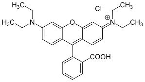
-COLORANTI OSSAZINICI E TIOAZINICI: contengono l'anello eterociclico azinico con un atomo di azoto sostituito da uno di ossigeno o di zolfo. Il più rappresentativo è forse il blù di metilene, figura, usato anche in istologia per le proprietà di colorare selettivamente tessuti cellulari.
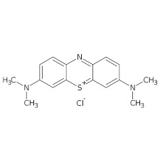
-COLORANTI FLAVONICI: dulcis in fundo, sostituendo variamente nel 2-fenilcromene (flavone),
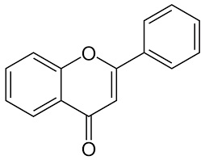
alcuni atomi di idrogeno negli anelli benzenici con gruppi alchilici o ossidrilici, si formano molti di quei colori che la natura fornisce ai fiori e ai frutti, ovvero le antocianine.
Ecco la formula generale:
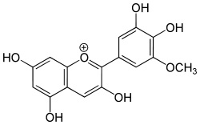
Al posto di un -R mettiamoci qualche -CH3 o qualche -OH e godiamoci il bellissimo colore risultante, come quello della cianidina, che dà il colore alle rose e ai fiordalsi e modifica il colore a seconda del pH della linfa... Magia della natura, magia della chimica!
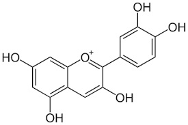
e cambiando qualche ossidrile...
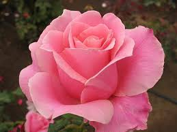
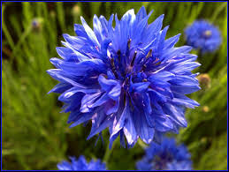
L'elenco di cui sopra è sicuramente incompleto, e serve solo come prima veloce individuazione di un colorante organico in una classe definita. Se mi verrà in mente qualcos'altro scartabellando in giro o per qualche buon gradito suggerimento, lo aggiungerò.